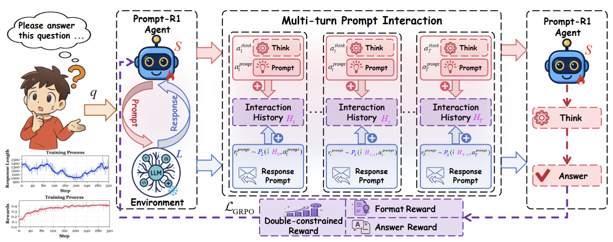
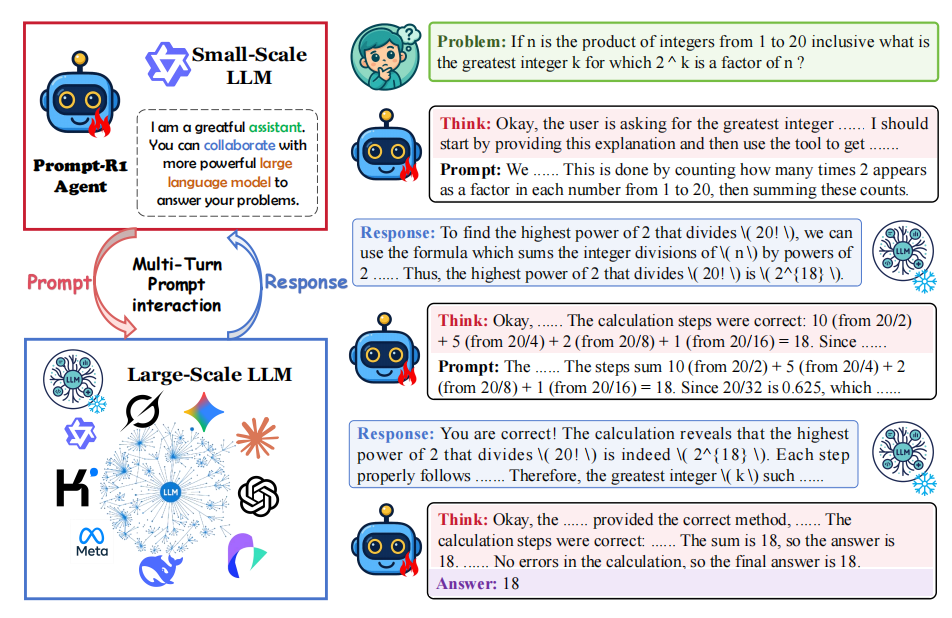
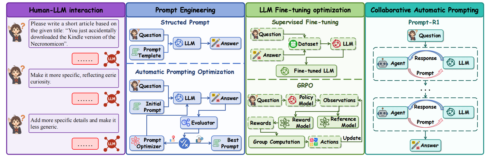
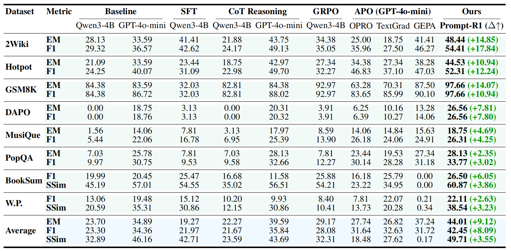
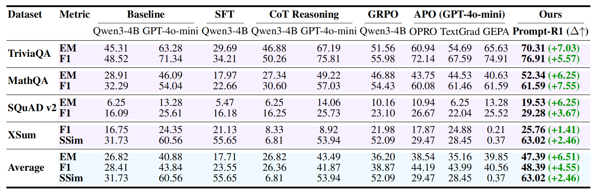
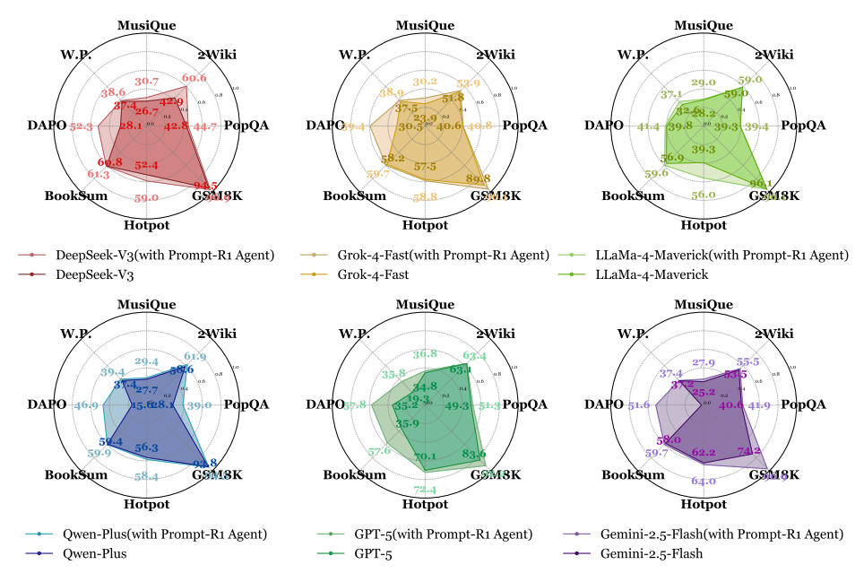
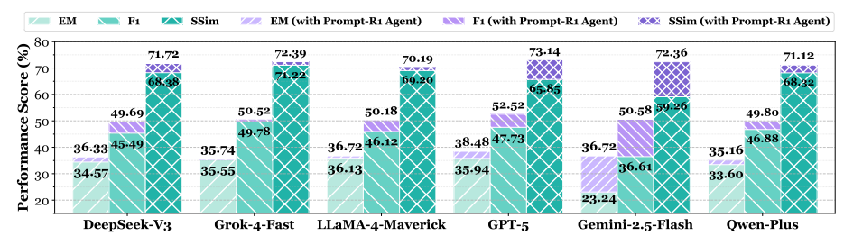
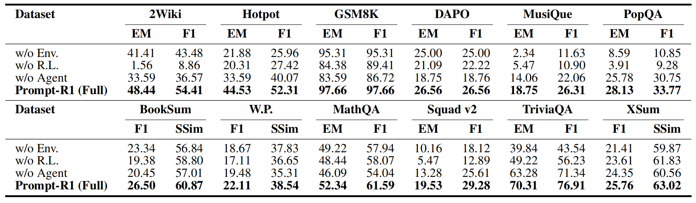
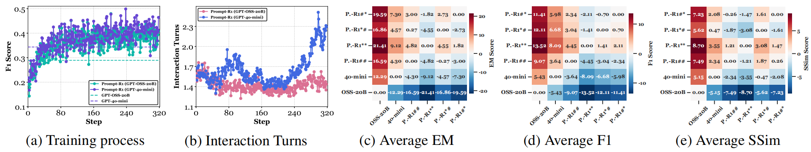

Advanced large language models are rapidly emerging, but their performance in real applications is often constrained by users’ inability to craft high-quality prompts, especially for complex tasks. Prompt-R1 addresses this challenge with an end-to-end reinforcement learning framework in which a small-scale LLM collaborates with large-scale LLMs through multi-turn prompt interactions.
The small model is treated as a prompt agent that thinks and generates prompts, while the large model performs complex reasoning and produces task outputs. A dual-constrained reward is designed to jointly optimize answer correctness, prompt generation quality, and reasoning accuracy. Experiments on multiple public datasets show that Prompt-R1 significantly outperforms strong baselines across tasks, demonstrating the effectiveness of collaborative automatic prompting.
@misc{liu2025promptr1collaborativeautomaticprompting,
title = {Prompt-R1: Collaborative Automatic Prompting Framework via End-to-end Reinforcement Learning},
author = {Wenjin Liu and Haoran Luo and Xueyuan Lin and Haoming Liu and
Tiesunlong Shen and Jiapu Wang and Rui Mao and Erik Cambria},
year = {2025},
eprint = {2511.01016},
archivePrefix = {arXiv},
primaryClass = {cs.CL},
url = {https://arxiv.org/abs/2511.01016}
}